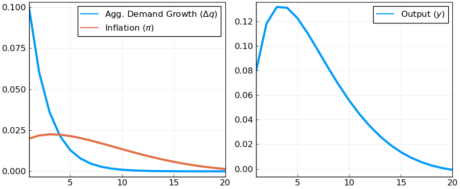

Pricing under RI with Endogenous Feedback
This example solves a pricing problem under rational inattention with endogenous feedback using the DRIPs package.
 to run and modify the following code (no software is needed on the local machine).
to run and modify the following code (no software is needed on the local machine).
See Afrouzi and Yang (2019) for background on the theory. Include the solver and import packages for plots and performance:
Contents
Setup
Problem
Suppose now that there is general equilibrium feedback with the degree of strategic complementarity $\alpha$: $p_{i,t}^*=(1-\alpha)q_t+\alpha p_t$ where
Note that now the state space representation for $p_{i,t}^*$ is no longer exogenous and is determined in the equilibrium. However, we know that this is a Guassian process and by Wold's theorem we can decompose it to its $MA(\infty)$ representation:
where $\Phi(.)$ is a lag polynomial and $u_t$ is the shock to nominal demand. Here, we have basically guessed that the process for $p_{i,t}^*$ is determined uniquely by the history of monetary shocks which requires that rational inattention errors of firms are orthogonal (See Afrouzi (2020)). Our objective is to find $\Phi(.)$.
Since we cannot put $MA(\infty)$ processes in the computer, we approximate them with truncation. In particular, we know for stationary processes, we can arbitrarily get close to the true process by truncating $MA(\infty)$ processes to $MA(T)$ processes. Our problem here is that $p_{i,t}^*$ has a unit root and is not stationary. We can bypass this issue by re-writing the state space in the following way:
here $\tilde{u}_{t-j}$ is the unit root of the process and basically we have differenced out the unit root from the lag polynomial, and $\phi(L)=(1-L)\Phi(L)$. Notice that since the original process was difference stationary, differencing out the unit root means that $\phi(L)$ is now in $\ell_2$, and the process can now be approximated arbitrarily precisely with truncation.
Matrix Notation
For a length of truncation $L$, let $\vec{x}_t\equiv (\tilde{u}_t,\tilde{u}_{t-1},\dots,\tilde{u}_{t-(L+1)})\in\mathbb{R}^L$. Then, note that $p_{i,t}^*\approx \mathbf{H} '\vec{x}_{t}$ where $\mathbf{H}\in \mathbb{R}^L$ is the truncated matrix analog of the lag polynominal, and is endogenous to the problem. Our objective is to find the general equilibrium $\mathbf{H}$ along with the optimal information structure that it implies.
Moreover, note that $q_t=\mathbf{H}_q'\vec{x}_t,\quad \mathbf{H}_q'=(1,\rho,\rho^2,\dots,\rho^{L-1})$
We will solve for $\phi$ by iterating over the problem. In particular, in iteration $n\geq 1$, given the guess $\mathbf{H}_{(n-1)}$, we have the following state space representation for the firm's problem
Then we can solve the rational inattention problem of all firms and get the new guess for $p_t^*$:
where $q_t^{(j)}$ is the $j$'th order belief of firms, on average, of $q_t$. Now, we need to write these higher order beliefs in terms of the state vector. Suppose, for a given $j$, there exists $\mathbf{X}_j\in \mathbb{R}^{L\times L}$ such that $ qt^{(j)} = \mathbf{H}q'\mathbf{X}j \vec{x}t $ This clearly holds for $j=0$ with $\mathbf{X}_0=\mathbf{I}$.
Now, note that
where the $(n)$ subscripts refer to the solution of the RI problem in the $(n)$'th iteration. Note that this implies $\mathbf{X}{j}=\mathbf{X}{(n)}^j,\forall j\geq 0 \Rightarrow qt^{(j)}=\mathbf{X}{(n)}^{j}\vec{x}_t $
This gives us an updated guess for $\mathbf{H}$:
We iterate until convergence of $\mathbf{H}_{(n)}$.
Initialization
Include the package:
using DRIPs;
nothing #hideAssign Parameters
ρ = 0.6; #persistence of money growth
σ_u = 0.1; #std. deviation of shocks to money growth
α = 0.8; #degree of strategic complementarity
L = 40; #length of truncation
Hq = ρ.^(0:L-1); #state-space rep. of Δq
nothing #hideSpecifying the primitives of the DRIP:
using LinearAlgebra;
ω = 0.2;
β = 0.99;
A = [1 zeros(1,L-2) 0; Matrix(I,L-1,L-1) zeros(L-1,1)];
Q = [σ_u; zeros(L-1,1)];
nothing #hideA Function for Finding the Fixed Point
Let us now define a function that solves the GE problem and returns the solution in a Drip structure:
function ge_drip(ω,β,A,Q, #primitives of drip except for H because H is endogenous
α, #strategic complementarity
Hq, #state space rep. of Δq
L; #length of truncation
H0 = Hq, #optional: initial guess for H (Hq is the true solution when α=0)
maxit = 200, #optional: max number of iterations for GE code
tol = 1e-4) #optional: tolerance for iterations
err = 1;
iter = 0;
M = [zeros(1,L-1) 0; Matrix(I,L-1,L-1) zeros(L-1,1)];
while (err > tol) & (iter < maxit)
if iter == 0
global ge = solve_drip(ω,β,A,Q,H0, w = 0.9);
else
global ge = solve_drip(ω,β,A,Q,H0;Ω0 = ge.Ω ,Σ0 = ge.Σ_1,maxit=15);
end
XFUN(jj) = ((I-ge.K*ge.Y')*ge.A)^jj * (ge.K*ge.Y') * (M')^jj
X = DRIPs.infinitesum(XFUN; maxit=L, start = 0); #E[x⃗]=X×x⃗
XpFUN(jj) = α^jj * X^(jj)
Xp = DRIPs.infinitesum(XpFUN; maxit=L, start = 0);
H1 = (1-α)*Xp'*Hq;
err= 0.5*norm(H1-H0,2)/norm(H0)+0.5*err;
H0 = H1;
iter += 1;
if iter == maxit
print("GE loop hit maxit\n")
end
println("Iteration $iter. Difference: $err")
end
return(ge)
end;
nothing #hideSolution
Solve for benchmark parameterization:
using Suppressor; # suppresses printing of function. comment to see convergence details
@time @suppress ge = ge_drip(ω,β,A,Q,α,Hq,L); # remove suppress to see convergence log
nothing #hide 0.514140 seconds (125.69 k allocations: 311.954 MiB, 11.16% gc time)
IRFs
Get IRFs:
geirfs = dripirfs(ge,T = L);
M = [zeros(1,L-1) 0; Matrix(I,L-1,L-1) zeros(L-1,1)]; # shift matrix
dq = diagm(Hq)*geirfs.x[1,1,:]; # change in nominal demand
Pi = (I-M)*geirfs.a[1,1,:]; # inflation
y = inv(I-M)*(dq-Pi); # output
using Plots, LaTeXStrings; pyplot();
p1 = plot(1:L,[dq,Pi],
label = [L"Agg. Demand Growth ($\Delta q$)" L"Inflation ($\pi$)"]);
p2 = plot(1:L,y,
label = L"Output ($y$)");
plot(p1,p2,
layout = (1,2),
xlim = (1,20),
lw = 3,
legend = :topright,
legendfont = font(12),
tickfont = font(12),
size = (900,370),
framestyle = :box)
Measure Performance
Solve and measure performance for random values of $\omega$:
using BenchmarkTools;
@suppress @benchmark ge_drip(ω,β,A,Q,α,Hq,L) setup = (ω=rand()) # solves and times the fixed point for different values of ωBenchmarkTools.Trial:
memory estimate: 296.57 MiB
allocs estimate: 35328
--------------
minimum time: 315.848 ms (9.97% GC)
median time: 338.124 ms (11.81% GC)
mean time: 341.721 ms (11.53% GC)
maximum time: 374.344 ms (9.45% GC)
--------------
samples: 15
evals/sample: 1This page was generated using Literate.jl.